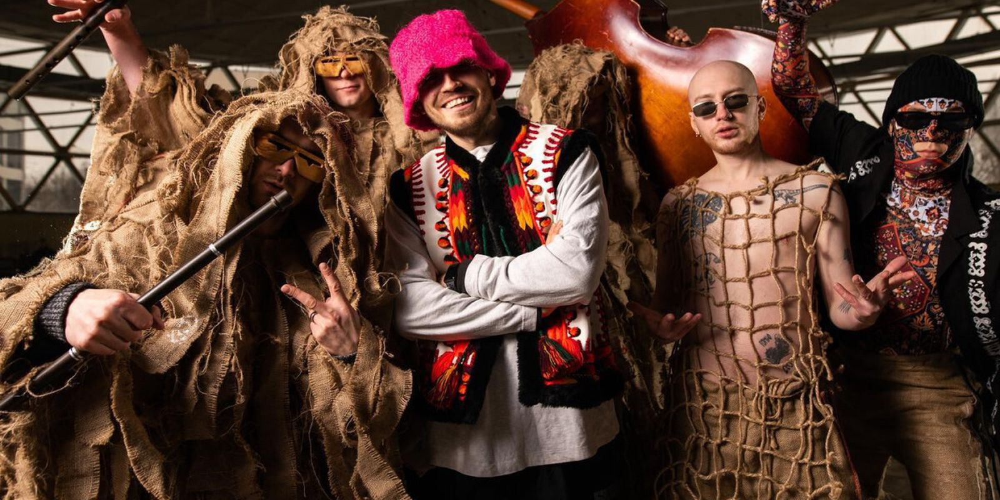

Україна дебютувала на пісенному конкурсі «Євробачення» у 2003 році. Тоді країну представив співак Олександр Пономарьов із піснею «Hasta la vista», де посів 14 сходинку.[1]
У 2004 році співачка Руслана з піснею «Wild Dances» здобуває перемогу й право на проведення ювілейного 50-го пісенного конкурсу «Євробачення» в Україні.[1]
У 2015 році Україна вперше за всю історію конкурсу, у зв'язку з початком Російсько-української війни та тимчасової окупації Криму, необхідністю економії та переходом на суспільне мовлення, не брала участь у конкурсі.[2] 25 травня 2015 року генеральний директор «НТКУ» Зурабі Аласанія повідомив, що Україна братиме участь у конкурсі наступного року.[3]
Джамала на пресконференції переможця конкурсу «Євробачення 2016»
У 2016 році Україну представляла співачка Джамала з піснею «1944», яка здобула перемогу, набравши 534 бали. Це друга перемога України на конкурсі після виграшу 2004 року.
У 2015 році Україна вперше за всю історію конкурсу, у зв'язку з початком Російсько-української війни та тимчасової окупації Криму, необхідністю економії та переходом на суспільне мовлення, не брала участь у конкурсі.[2] 25 травня 2015 року генеральний директор «НТКУ» Зурабі Аласанія повідомив, що Україна братиме участь у конкурсі наступного року.[3]
